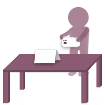
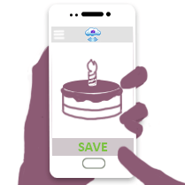
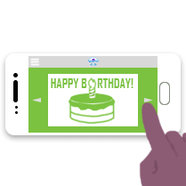
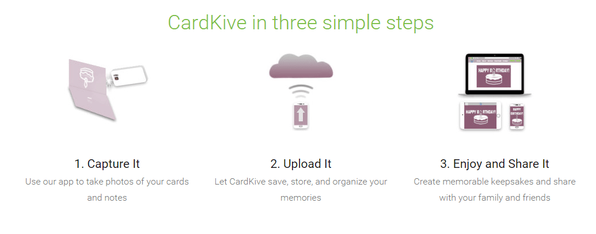
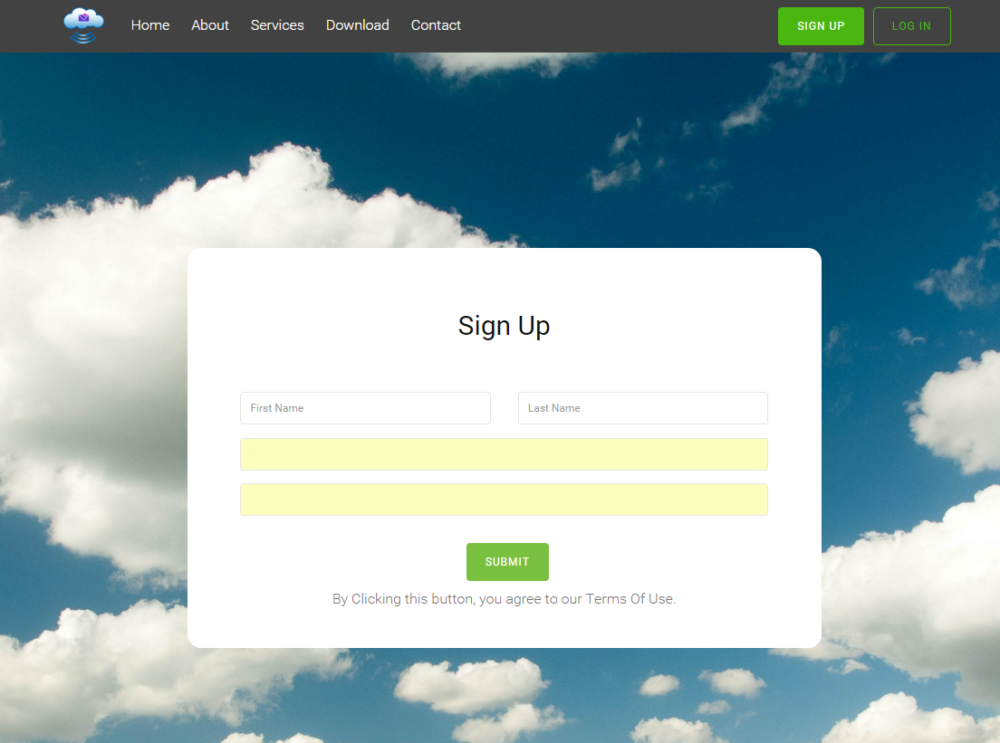
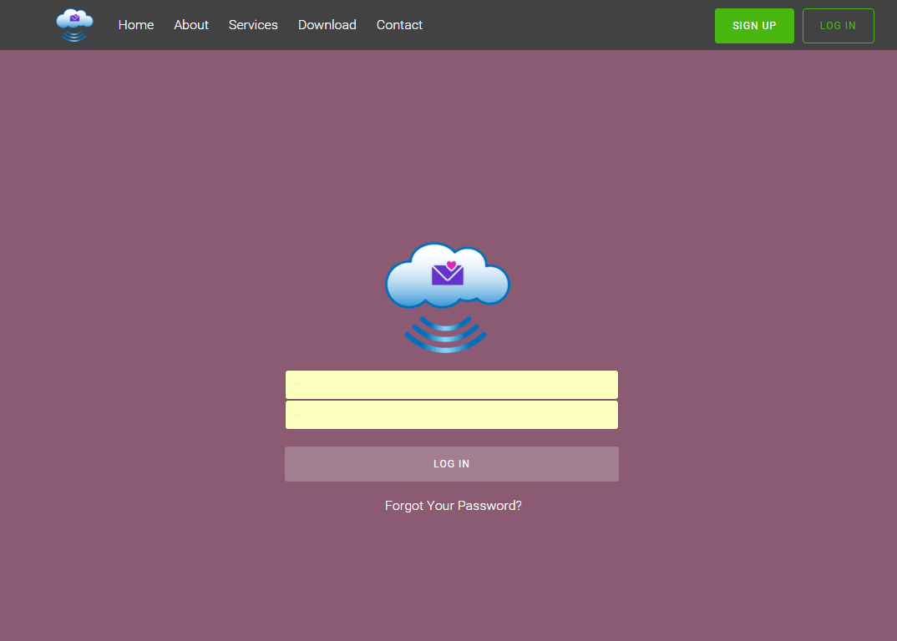
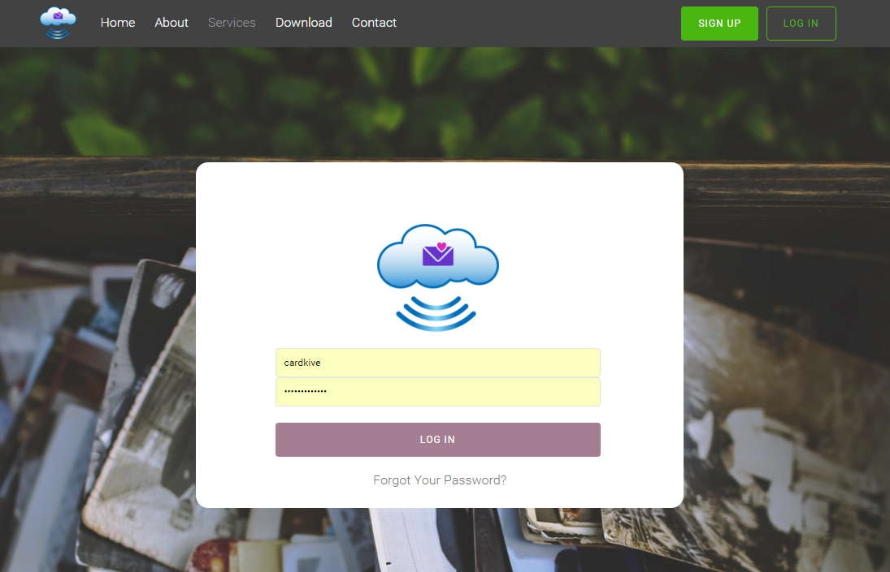
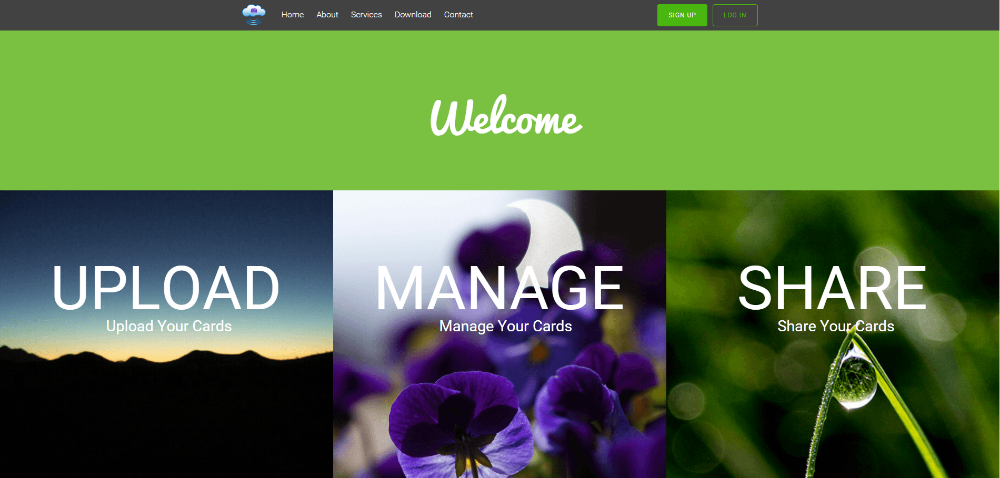
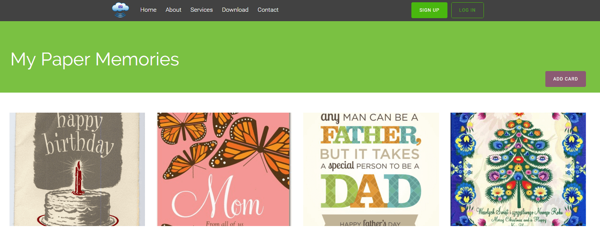
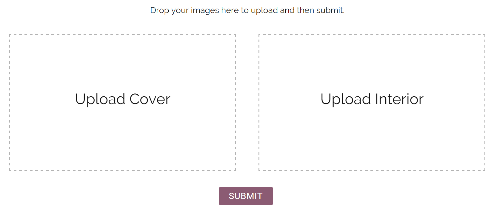

- Process & Iteration-
The founders of CardKive, and my partner and I met every week in order to talk about what we did, what we needed help with, and what the plan was for in the future.
Infographics
I was put in charge of creating the graphics for the home page of the website, illustrating how to use CardKive and why you would use it. These were a set of three photos, presented as a step-by-step process. These intial themes were:
- Capture Your Photos
- Store Your Memories
- Revisit and Cherish Your Memories
> Drafts
> A personal touch
This draft set of graphics was meant to feel more personal by including the user in the picture. An user of Cardkive can feel as if they were actually using the app to store their memories for safekeeping, and enjoy them later.
  > Final Design
These are the final images that we decided to use for the website. We got rid of the unclear abstraction of uploading photos, and older usb connection way of uploading, and replaced it with a more modern approach of uploading, i.e. to the cloud. CardKive is aimed at younger people, so this kind of graphic is more current and trendy. And the last graphic makes it clear, that CardKive can be used on both desktops and your mobile devices, while previous drafts of the design only represented a phone. This was a result of a misunderstanding of the product and where the founders of CardKive wanted to go with it. I was under the impression that CardKive was focused on the mobile application rather than the desktop, but they really wanted it to be accessible to people everywhere, since memories happen everywhere.
Another aspect of the design includes the "gradient" effect from the first step to the last. Aside from the numbering, we wanted the steps to be clear, so there's a subtle gradient effect applied to the pictures where the first picture is lighter than the next, and so on.
Log In & Sign Up Page
There multiple log-in and sign-in screens across websites. I compared log-in screens with multiple websites and looked at what we wanted to accomplish, and decided what to do from there.
> Draft: Distinct Log In & Sign Up
The log in and sign up page were originally given distinct appearances, in order for the user to differentiate the two, so that they don't make any mistakes when trying to either log in or sign up.
 > Final Design
The log in page was made to be more consistent with the sign up page, and the rest of the website. Much of the website features a fullscreen image on the page, so we realized the inconsistency and I made coressponding changes.
Welcome Page
This is the landing page after the user logs into the website. The founders wanted the part of the website after the user logs in to be different, more welcoming and personal than the public view.

> Final Design
There is a greyscale effect that is applied to the pictures when you hover over them, in order to make it more clear to the user that they are in fact clickable buttons.
Adding Cards
We dicussed various ways for a user to add a card to their collection online. A couple of these ways include:
- A "card" (i.e. dashed outline) within the flow of cards that prompts you to add a card by clicking on it. This would be placed either at the end of the cards of the beginning.
- A fixed button at the lower right corner of the screen, like Google Calendar and other applicaitons by Google. The user could click on this anytime they wanted as they scrolled through the cards.
- A button in the header of the page
- A menu bar for a set of operations on the website
> Final Design
I decided on a button in the header, so that where the user can add cards stays consistent. The dashed outline at the end of the collection would mean that the user would always have to browse to the end of their collection in order to add a card, and placing it at the beginning would take up more space on the page than what's needed. A button in the header is just clear as and is more conventional, so the user knows how to interact with the website in order to achieve their goal of adding a card. A fixed button in the lower right hand corner was a good option since the user would alwasys have an option to add a card no matter how far they've gone down the page, but it's not as obvious to the user since it's far from where a user will typically look on a website (upper left), and on mobile devices, it obscures the image of the card. Additionally, adding a card is an action that is typically found a menu, which is usually placed at the top of the page.
> Future Considerations
There are more functions that we want to add to the page i.e. delete a card, so as we add more, we might want to change this, and perhaps add a menu bar to the page, so that the user can easily access all of these functions
Uploading Cards
There were a few ideas for the layout of this page. One was similar to Flickr's whole page upload, where the user can drag in or click to upload several pictures into the window, and in the following screen, you are allowed to decide the logistics for each of the photos you've just uploaded including name, description, and album. This contrasts with another method where users handle the logistics at the time of uploading, so before uploading the picture, the user must title the picture, assign an album, etc.
> Final Design
CardKive is meant for cards, and cards typically focus on two parts, the front and the back. There's really no need for the user to upload more than two photos, so in order to make things simpler and remain consistent, we have two upload containers, one for the front, and another for the interior of the card.
- Final Product -
CardKive is for people who receive lots of cards for many different occassions, but aren't able to enjoy them. These cards end up on boxes and stored away in the attic. Storing these cards in a place on your phone that's easily accessible allows them to enjoy these cards whenever they want. It was found that the typical user for this type of application are females ages twenty to forty.
While most of website is done, we're still add the final touches, working on responsive designs, etc. and there are aspects of the website that are likely to change. But, you can view the website as it is now at:
mycardkive.com
- Lessons Learned -
This was my first time making a real website from the beginning. It's really made me aware of the complexity of the web including issues like cross-browser compatibility and responsive design. This website was created on Wordpress, so it's helped me understand the limitations and added complexities of that, but also the benefits of a content management system and why people would want to use one.